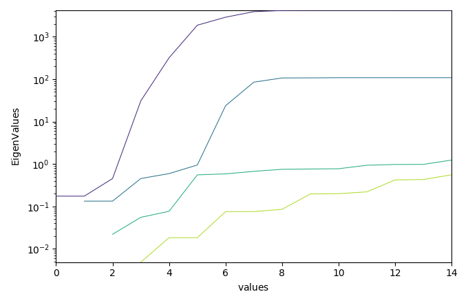
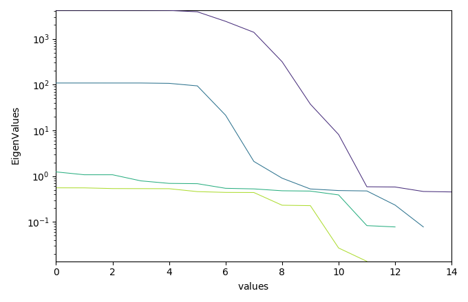

Note
Click here to download the full example code
EFA analysis (Keller and Massart original example)¶
In this example, we perform the Evolving Factor Analysis of a TEST dataset (ref. Keller and Massart, Chemometrics and Intelligent Laboratory Systems, 12 (1992) 209-224 )
import spectrochempy as scp
import numpy as np
# sphinx_gallery_thumbnail_number = 5
Generate a test dataset¶
1) simulated chromatogram¶
t = scp.Coord(np.arange(15), units="minutes", title="time") # time coordinates
c = scp.Coord(range(2), title="components") # component coordinates
data = np.zeros((2, 15), dtype=np.float64)
data[0, 3:8] = [1, 3, 6, 3, 1] # compound 1
data[1, 5:11] = [1, 3, 5, 3, 1, 0.5] # compound 2
dsc = scp.NDDataset(data=data, coords=[c, t])
2) absorption spectra¶
3) simulated data matrix¶
dataset = scp.dot(dsc.T, dss)
dataset.data = np.random.normal(dataset.data, 0.2)
dataset.title = "intensity"
dataset.plot()
<_AxesSubplot:xlabel='values $\\mathrm{}$', ylabel='intensity $\\mathrm{}$'>
4) evolving factor analysis (EFA)¶
Evolving Factor Analysis: 0%
Evolving Factor Analysis: 3%
Evolving Factor Analysis: 6%
Evolving Factor Analysis: 10%
Evolving Factor Analysis: 13%
Evolving Factor Analysis: 16%
Evolving Factor Analysis: 20%
Evolving Factor Analysis: 23%
Evolving Factor Analysis: 26%
Evolving Factor Analysis: 30%
Evolving Factor Analysis: 33%
Evolving Factor Analysis: 36%
Evolving Factor Analysis: 40%
Evolving Factor Analysis: 43%
Evolving Factor Analysis: 46%
Evolving Factor Analysis: 53 %
Evolving Factor Analysis: 56 %
Evolving Factor Analysis: 60 %
Evolving Factor Analysis: 63 %
Evolving Factor Analysis: 66 %
Evolving Factor Analysis: 70 %
Evolving Factor Analysis: 73 %
Evolving Factor Analysis: 76 %
Evolving Factor Analysis: 80 %
Evolving Factor Analysis: 83 %
Evolving Factor Analysis: 86 %
Evolving Factor Analysis: 90 %
Evolving Factor Analysis: 93 %
Evolving Factor Analysis: 96 %
Evolving Factor Analysis: 100 %
Plots of the log(EV) for the forward and backward analysis
efa.f_ev.T.plot(yscale="log", legend=efa.f_ev.y.labels)
efa.b_ev.T.plot(yscale="log")
- 
- 
<_AxesSubplot:xlabel='values $\\mathrm{}$', ylabel='EigenValues $\\mathrm{}$'>
Looking at these EFA curves, it is quite obvious that only two components are really significant, and this corresponds to the data that we have in input. We can consider that the third EFA components is mainly due to the noise, and so we can use it to set a cut of values
n_pc = 2
efa.cutoff = np.max(efa.f_ev[:, n_pc].data)
f2 = efa.f_ev
b2 = efa.b_ev
# we concatenate the datasets to plot them in a single figure
both = scp.concatenate(f2, b2)
both.T.plot(yscale="log")
# TODO: add "legend" keyword in NDDataset.plot()
<_AxesSubplot:xlabel='values $\\mathrm{}$', ylabel='EigenValues $\\mathrm{}$'>
Get the abstract concentration profile based on the FIFO EFA analysis
efa.cutoff = None
c = efa.get_conc(n_pc)
c.T.plot()
# scp.show() # uncomment to show plot if needed (not necessary in jupyter notebook)
<_AxesSubplot:xlabel='values $\\mathrm{}$', ylabel='relative concentration $\\mathrm{}$'>
Total running time of the script: ( 0 minutes 1.964 seconds)